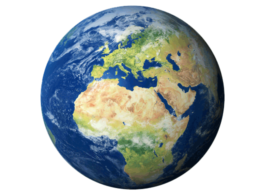

Earth

The third planet from the sun, Earth is a waterworld,
with two-thirds of the planet covered by ocean. It’s
the only world known to harbor life. Earth’s atmosphere is
rich in life-sustaining nitrogen and oxygen. Earth's surface
rotates about its axis at 1,532 feet per second
(467 meters per second) — slightly
more than 1,000 mph (1,600 kph) — at the equator.
The planet zips around the sun at more than 18 miles per second
(29 km per second).
Diameter: 7,926 miles (12,760 km)
Orbit: 365.24 days
Day: 23 hours, 56 minutes